Learn
Learning intentions Forces - a guide that starts from the beginning.
A force can change what an object does. We will learn to identify forces, draw them and use them to explain everyday situations.
By the end, I will be able to... describe a force as a push or a pull, measured in newtons; name common forces and sort them into contact and non-contact forces; draw force arrows with correct labels, directions and relative lengths; explain the difference between mass and weight and calculate weight; find a resultant force and explain balanced and unbalanced forces. How to work through the guide Read one topic at a time. Try each question in your notebook before opening Check the answer . The practice section uses the questions from your worksheet.
For calculations on Earth, we will use g = 10 N/kg , as on your worksheet.
Learn
What is a force? A force is a push or a pull caused by one object acting on another.
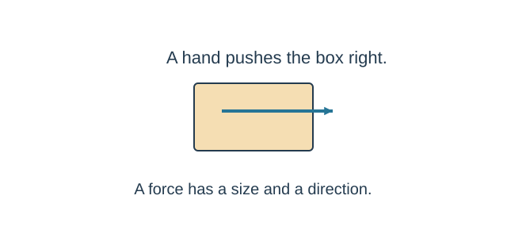
The hand acts on the box. The force on the box points right. A hand can push a door. A rope can pull a sledge. A force has a size and a direction . A force acts on an object. Always ask: which object am I describing? Try it You pull a drawer open. Which object exerts the pull, and which object receives it?
Check the answer Your hand exerts the pull. The drawer is the object receiving the force.
Learn
What can a force change? Forces can change an object's motion or shape.
What can change? Example Speed increases A kick makes a stationary ball move. Speed decreases Brakes slow a bicycle. Direction changes A racket sends a ball in a new direction. Shape changes A hand stretches an elastic band.
A force does not always make an object move. Other forces may balance it. We will compare forces later in the guide.
Try it A ball moves at the same speed but changes direction. Has its motion changed?
Check the answer Yes. Motion includes direction as well as speed.
Learn
Measuring a force Force is measured in newtons. The unit symbol is N.
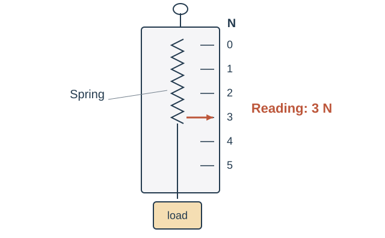
A force meter uses a spring and a numbered scale. Check that the unloaded meter reads zero. Apply the force to the hook. Read the scale beside the pointer and write the unit N. Try it The pointer in the diagram is beside 3. What is the force?
Check the answer 3 N. A number without its unit is not a complete measurement.
Learn
Contact or non-contact? Contact means the objects are touching. Non-contact forces act without touching.
Contact forces Non-contact forces Friction Gravitational force (including weight) Support from a surface Magnetic force Tension in a rope Electrostatic force Air and water resistance Elastic force and upthrust
Air resistance is a contact force. Moving objects collide with air particles, even though we cannot see the particles.
A magnet can attract an iron object across a gap. A charged balloon can attract small pieces of paper without first touching them.
Try it Is Earth pulling a falling ball a contact force?
Check the answer No. Gravity acts without contact. It is a non-contact force.
Learn
Identify the forces on one object Choose the object first. Then ask what is pushing or pulling it.
Force on the book What causes it? Weight, downwards Earth pulls the book towards Earth. Support, upwards The table pushes the book up.
Support is also called the normal contact force . The force of the book on the table acts on a different object, so it does not belong in this book diagram.
Try it Why should we not add a force called movement to this diagram?
Check the answer Movement describes what an object does. It is not the name of a force .
Learn
Magnetic and electrostatic forces Both can act across a gap: they are non-contact forces.
Magnetic force: two magnets can attract or repel. A magnet also attracts some materials, such as iron.Electrostatic force: electrically charged objects can attract or repel. Rubbing a balloon can give it an electric charge.Try it A balloon attracts paper without touching it. Is this a contact force?
Check the answer No. The electrostatic force acts across the gap.
Learn
How to draw a force A force arrow shows both size and direction.
Choose the object and sketch it simply. Start each force arrow on the object. Point the arrowhead in the direction the force acts. Label the force. If its size is known, include the number and N. Use equal lengths for equal forces and a longer arrow for a larger force. In this guide, any grey dashed arrow is labelled movement . It is not a force arrow.
Try it Two opposite forces are both 5 N. How should their arrow lengths compare?
Check the answer The two arrows must be equal in length .
Learn
Draw a book on a desk Worked example: the book is at rest on a horizontal desk.
The book does not speed up or move vertically. Support and weight are equal in size, so the two arrows have equal lengths.
Try it Does the book have no forces on it because it is not moving?
Check the answer No. Weight and support both act. Their effects balance.
Learn
What is mass? Mass tells us how much matter is in an object.
The usual unit of mass is the kilogram (kg) . Smaller masses may be given in grams (g). Use a balance to measure mass. The mass of the same object stays the same when it is taken to another world. Convert grams before calculating weight 1 kg = 1000 g
To change grams into kilograms, divide by 1000 .
200 g = 0.20 kg
Try it Which has more mass: 400 g or 0.4 kg?
Check the answer They have the same mass : 400 divided by 1000 is 0.4 kg.
Learn
What is weight? Weight is the force of gravity acting on an object.
Weight is a force , so its unit is the newton (N) . Near Earth, weight acts downwards , towards Earth. A larger mass has a larger weight in the same gravitational field. weight = mass × gravitational field strength
W = m × g
Symbol Meaning Unit W Weight N m Mass kg g Gravitational field strength N/kg
Worked example: A mass of 0.20 kg on Earth has weight 0.20 × 10 = 2 N .
Try it A bag has mass 3 kg. Find its weight on Earth using g = 10 N/kg.
Check the answer W = 3 × 10 = 30 N . The mass is still 3 kg.
Learn
Same mass, different weight Gravitational field strength tells us the weight of each kilogram.
A 1 kg object has weight 10 N on Earth and 1.6 N on the Moon . Its mass is 1 kg in both places.
Mass Weight Measured in kg Measured in N Amount of matter Gravitational force Same object: same mass Changes when g changes
Try it A 2 kg object is taken to the Moon. Does its mass become smaller?
Check the answer No. Its mass stays 2 kg. Its weight becomes 2 × 1.6 = 3.2 N .
Learn
Friction and grip Friction acts between surfaces that touch. It opposes sliding or attempted sliding.
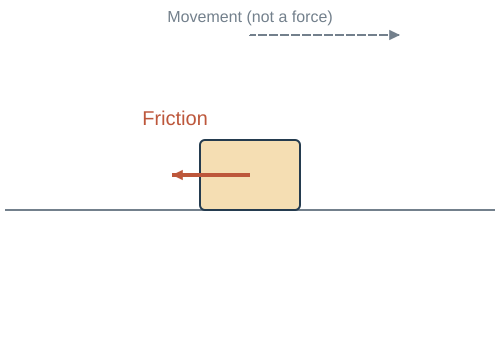
Only the horizontal force is shown. The box is sliding right; friction acts left. Rough surfaces usually produce more friction than smooth surfaces because the surfaces catch on one another more.
Friction is useful for grip and braking . Friction can slow a sliding object and cause surfaces to warm up. Lubrication can reduce friction between moving surfaces. Try it A box is already sliding left across a floor. In which direction does friction on the box act?
Check the answer Right. It opposes the sliding of the box relative to the floor.
Learn
Other contact forces Name the force that explains the push or pull.
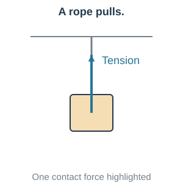
Tension: a stretched rope pulls along its length. 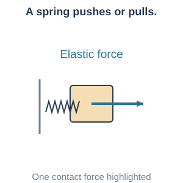
Elastic force: a stretched or compressed spring pushes or pulls. 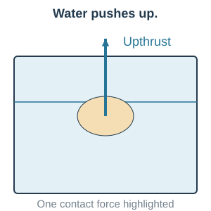
Upthrust: a liquid or gas exerts an upward force. Water resistance is drag from water. Like air resistance, it opposes motion through the fluid.
Try it A lamp hangs from a cable. What is the upward force on the lamp?
Check the answer Tension from the cable. The cable pulls the lamp upwards.
Learn
Air resistance Air resistance is a contact force that opposes motion through the air.
Compare the same piece of paper, flat and crumpled, at the same speed .
At the same speed, a larger area facing the air usually gives more air resistance . For the same object and shape, greater speed gives more air resistance . A streamlined shape reduces drag. Flattening or crumpling the same paper changes its shape and exposed area. It does not change its mass or weight.
Try it Why does crumpled paper usually fall faster than the same paper left flat?
Check the answer It presents a smaller area to the air and experiences less air resistance at the same speed. Its weight has not increased.
Learn
Resultant force The resultant is the single force with the same overall effect as the forces acting together.
Same direction: add 6 N + 2 N = 8 N right
Opposite directions: subtract 9 N − 4 N = 5 N right
The resultant points in the direction of the larger force . These diagrams show horizontal forces only.
Try it A pull of 7 N left opposes a pull of 3 N right. Find the resultant.
Check the answer Learn
Balanced forces Balanced forces have a resultant of 0 N.
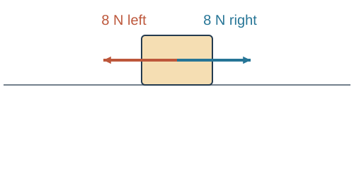
8 N left and 8 N right cancel. The resultant is 0 N. Only horizontal forces are shown. If the object is... Balanced forces mean... At rest It stays at rest. Already moving It continues at constant speed in a straight line.
Balanced forces do not mean that no forces act. They mean the forces have no overall effect on the motion .
Try it A car travels at constant speed in a straight line. The driving force is 500 N forward. What is the total resistance?
Check the answer 500 N backwards. The forces balance, so the resultant is 0 N.
Learn
Unbalanced forces Unbalanced forces have a resultant that is not zero. The motion changes.
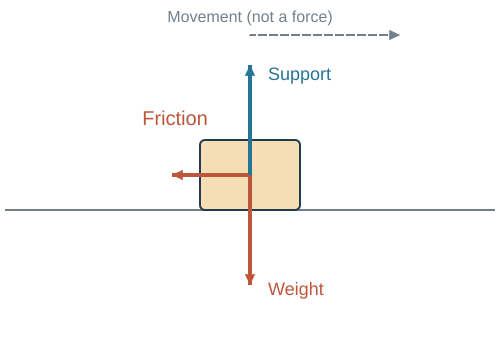
The box is moving right. Friction gives a resultant to the left, so the box slows down. Resultant compared with movement What happens? In the direction of movement The object speeds up. Opposite the movement The object slows down. Sideways to the movement The direction of movement changes.
A resultant force does not have to point in the direction an object is already moving .
Try it A bicycle is moving forward and braking. Does it instantly start moving backwards?
Check the answer No. The backwards resultant first makes its forward speed decrease.
Learn
A falling object Weight acts downwards. Air resistance acts upwards while the object falls.
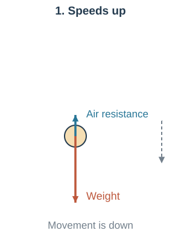
At first: weight is larger. There is a downward resultant, so the object speeds up. 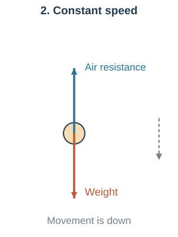
Later: air resistance equals weight. The object keeps falling at constant speed. As speed increases, air resistance increases. When the forces balance, the falling speed is called terminal velocity .
Try it At terminal velocity, is the object stationary?
Check the answer No. It is still falling. Its speed is constant because the resultant is 0 N.
Going further
What changes when a parachute opens? Going further: consider the parachutist and parachute together.
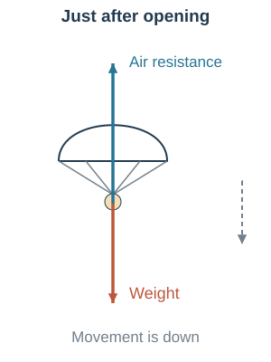
Just after opening: air resistance is larger than weight. The downward motion slows. 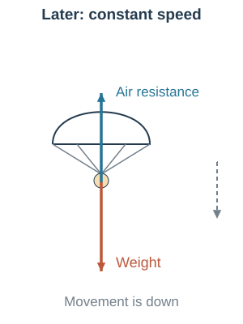
As the speed falls, air resistance falls. Later, it equals weight at a lower constant speed. Opening the parachute increases the area facing the air. The total mass and weight stay the same in this example.
Try it Does an upward resultant mean the parachutist must already be moving upwards?
Check the answer No. While moving down, an upward resultant makes the parachutist slow down.
Practice
Practice 1 - mass and weight Try the original worksheet questions before looking at the answers.
a) What is mass? Include its unit.
b) What is weight? Include its unit.
Try it Write both definitions in your notebook.
Check the answer a) Mass is the amount of matter in an object. Its unit is the kilogram (kg) .
b) Weight is the force of gravity acting on an object. Its unit is the newton (N) .
Practice
Practice 2 - contact or non-contact? Write C for contact or N for non-contact.
Force C or N? Weight Friction Magnetism Support Air resistance Tension
Try it Classify all six forces.
Check the answer Force Answer Weight N - gravity acts without contact Friction C - surfaces touch Magnetism N - can act across a gap Support C - surface pushes on the object Air resistance C - air particles contact the object Tension C - rope or cable pulls on the object
Practice
Practice 3 - what affects the force? Use the words surface, area and same speed where they help.
a) Which usually produces more friction: rough or smooth surfaces? Why?
b) At the same speed, which has more air resistance: flat or crumpled paper? Why?
Try it Answer both questions before opening the explanation.
Check the answer a) Rough surfaces usually produce more friction. Their uneven surfaces catch on each other more.
b) Flat paper has more air resistance at the same speed. A greater area faces the air, so the air exerts more drag.
Practice
Practice 4 - draw the forces Draw and label the force arrows on each object. Decide whether the forces balance.
a) Book on a desk: at rest. 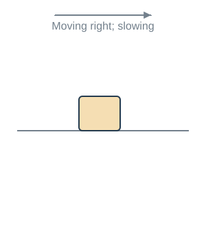
b) Sliding box: moving right and slowing. 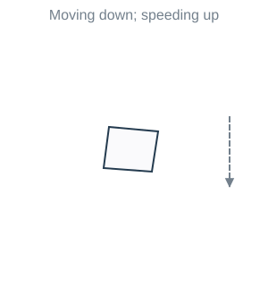
c) Falling paper: moving down and speeding up. Try it Use equal arrow lengths for equal forces. Draw on paper before opening the answer.
Check the answer For the box, assume friction is the only horizontal force. A movement arrow is not an extra force.
Practice
Practice 5 - from mass to weight Use g = 10 N/kg. Convert grams to kilograms first.
W = m × g
Object Mass (g) Mass (kg) Weight (N) A 120 B 350 C 600
Show one full calculation in your notebook.
Try it Complete the table and show your working.
Check the answer Object Mass (g) Mass (kg) Weight (N) A 120 0.120 1.2 B 350 0.350 3.5 C 600 0.600 6.0
A: 120 ÷ 1000 = 0.120 kg. Then W = 0.120 × 10 = 1.2 N .
B: 0.350 × 10 = 3.5 N . C: 0.600 × 10 = 6.0 N .
Practice
Practice 6 - which world? Find gravitational field strength, then match it to the world.
Earth Moon Mars Venus 10 N/kg 1.6 N/kg 3.7 N/kg 8.9 N/kg
g = weight mass
World Mass (kg) Weight (N) g (N/kg) Name A 2 7.4 B 1 8.9 C 0.5 0.8
Why can the same object have different weights on different worlds?
Try it Show each division and give the world name.
Check the answer A: 7.4 ÷ 2 = 3.7 N/kg → Mars .
B: 8.9 ÷ 1 = 8.9 N/kg → Venus .
C: 0.8 ÷ 0.5 = 1.6 N/kg → Moon .
The same mass experiences a different gravitational force when g changes . Its mass does not change.
Practice
Practice 7 - resultant force Find the resultant, its direction and whether the forces balance.
Case Forces Resultant Direction Balanced? a 8 N left and 8 N right b 12 N right and 5 N left c 10 N down and 4 N up
Try it Subtract opposite forces. Keep the direction of the larger force.
Check the answer Case Working Resultant Direction Balanced? a 8 − 8 0 N No resultant direction Yes b 12 − 5 7 N Right No c 10 − 4 6 N Down No
In case a, the two forces still act. Their effects cancel. In cases b and c, the non-zero resultant changes the motion.
← Previous Next →